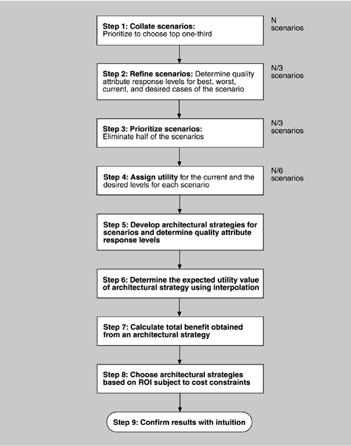

12.3 Implementing the CBAM
Turning the foundations for the CBAM into a set of practical steps involves taking the bases we discussed in the previous section and performing them in a fashion that minimizes the work that is needed. Part of being "practical" involves limiting the size of the decision space.
STEPS
A process flow diagram for the CBAM is given in Figure 12.3. The first four steps are annotated with the relative number of scenarios they consider. That number steadily decreases, ensuring that the method concentrates the stakeholders' time on the scenarios believed to be of the greatest potential in terms of ROI.
-
Step 1: Collate scenarios. Collate the scenarios elicited during the ATAM exercise, and give the stakeholders the chance to contribute new ones. Prioritize these scenarios based on satisfying the business goals of the system and choose the top one-third for further study.
-
Step 2: Refine scenarios. Refine the scenarios output from step 1, focusing on their stimulus-response measures. Elicit the worst-case, current, desired, and best-case quality attribute response level for each scenario.
-
Step 3: Prioritize scenarios. Allocate 100 votes to each stakeholder and have them distribute the votes among the scenarios, where their voting is based on the desired response value for each scenario. Total the votes and choose the top 50% of the scenarios for further analysis. Assign a weight of 1.0 to the highest-rated scenario; assign the other scenarios a weight relative to the highest rated. This becomes the weighting used in the calculation of a strategy's overall benefit. Make a list of the quality attributes that concern the stakeholders.
-
Step 4: Assign utility. Determine the utility for each quality attribute response level (worst-case, current, desired, best-case) for the scenarios from step 3.
-
Step 5: Develop architectural strategies for scenarios and determine their expected quality attribute response levels. Develop (or capture already developed) architectural strategies that address the chosen scenarios and determine the "expected" quality attribute response levels that will result from them. Given that an architectural strategy may have effects on multiple scenarios, we must perform this calculation for each scenario affected.
-
Step 6: Determine the utility of the "expected" quality attribute response levels by interpolation. Using the elicited utility values (that form a utility curve), determine the utility of the expected quality attribute response level for the architectural strategy. Do this for each relevant quality attribute enumerated in step 3.
-
Step 7: Calculate the total benefit obtained from an architectural strategy. Subtract the utility value of the "current" level from the expected level and normalize it using the votes elicited in step 3. Sum the benefit due to a particular architectural strategy across all scenarios and across all relevant quality attributes.
-
Step 8: Choose architectural strategies based on ROI subject to cost and schedule constraints. Determine the cost and schedule implications of each architectural strategy. Calculate the ROI value for each as a ratio of benefit to cost. Rank-order the architectural strategies according to the ROI value and choose the top ones until the budget or schedule is exhausted.
-
Step 9: Confirm results with intuition. For the chosen architectural strategies, consider whether these seem to align with the organization's business goals. If not, consider issues that may have been overlooked while doing this analysis. If there are significant issues, perform another iteration of these steps.

|